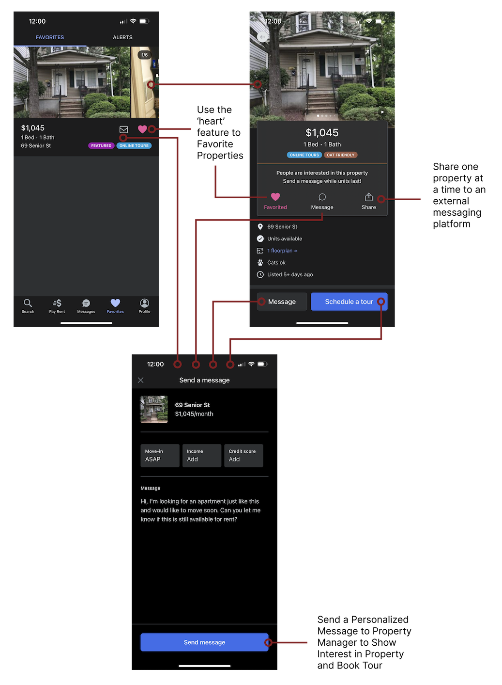
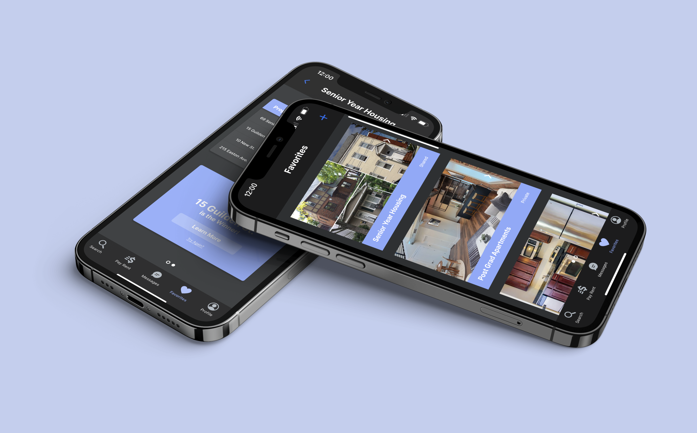

Overview
About the Project
OVERVIEW
This case study is in completion for KPCB’s 2022 Design Fellow application.
The prompt is to “Redesign a feature of a Kleiner Perkins company’s product.”
TIMELINE
December 7-14 (7 days)
TOOLS
Figma
CONTRIBUTION
I coordinated this project and my responsibilities included understanding the overall landscape, ideating solutions, and prototyping UI.
The Challenge
Integrate a communication and comparison feature that encourages interaction among users who are looking to find a place with roommates.
The Solution
A customizable home-searching app with specialized features for individuals living with roommates.
Understanding the Problem
Background
What is Zumper?
A resource used by renters to find houses, rooms, condos, or apartments for rent.
Apply Online
- Submit digital rental applications and credit reports with Zumper’s screening service
Quality Listings
- Inventory is updated in real-time
Realtime Alerts
- Filter by location, price range, bedroom count, pet-friendly, or amenity and set an alert to get notifications when a new listing is posted
Motivation
My friends and I faced a difficult situation when searching for off-campus housing together during our sophomore year of college.
There were multiple platforms that we used in our search: an online website for Rutgers Off-Campus Housing, various apartment-searching
websites, and Facebook. When one person found a potential place, it was shared in a group chat and compared against other potential ones.
We realized this process was tedious because the groupchat would then consist of links and pictures of the property without
providing valuable information.
To optimize our search, we realized utilizing Google Sheets would be best for analysis. We compared potential properties by viewing
which one matched all of our desired features and was within our budget, all while dividing it in thirds (because there are three of us!).
After careful analysis and reaching out to the property manager, we were able to tour and sign the lease.
This process took well over two weeks to complete, and I wondered if there was a better way to find a place with roommates.
Why is apartment searching such a hassle, and even harder with roommates?
Zumper Experience
Screenshots from the App

The Problem
Zumper is dedicated to providing its user the ability to find potential homes, contact property managers, schedule tours, submit
housing applications, and pay rent seamlessly––all at the touch of our fingertips.
The existing features on Zumper, however, are not beneficial when searching for a place with roommates. Although the Favorites feature
allows users to save all potential homes in one place for easy reference, it does not allow you to make a customized board (similar to folders)
or share a compiled list of all potential homes, but just one property at a time to an external messaging source. The Messaging feature only
allows you to send information regarding your move-in date, income, credit score, and a personalized message and does not accommodate group messaging.
Although Zumper has positive intentions with its platform, it fails to provide assistance for individuals who are planning to live with roommates.
Current User Flow
How can Zumper accommodate to its users and encourage interaction among groups in search of a potential home?
User Research
Research
Designing for Millennials and Gen Z
According to Zumper, out of the 6000+ individuals who responded to their 2019 survey, more than 45% reported to be living with roommates. This information can be translated to the understanding that it is likely that a user is using Zumper to find a home to live with a roommate or multiple. Of those who are living with roommates, 62% are between the ages 20 and 29.
Survey Insight
Participants
I chose six students and working professionals and conducted semi-structured interviews with them.
I tried to discover their pain points, needs, and requirements.
Interview Script
What resources do you use when searching for a new home?
What are your “musts” when searching for listings?
How do you track your listings?
Do you have roommates?
How do you share information of listings to potential roommates?
How is your ability to communicate to landlords?
Pain Points
- Lack of personalization when filtering listings
- Lack of communication variety between multiple users (roommate(s) and landlords)
- Lack of customization in Favorites
Survey Findings
- The Saved Feature is used individually and potential properties are shared to external group chats
- The process is time-consuming, tedious, and takes a lot of effort
- External resources were used to keep track of potential homes for analysis
User Personas
JOHN, 21
John is a low-income college student and is searching for off-campus housing for the upcoming school year with
his three friends. He has never lived off-campus or on his own before and is unsure how the process works and
what is essential for “a home”. He also wants to find a place that is within his strict budget.
TAMMY, 28
Tammy is looking for a new place to move in with her fiance that is budget-friendly and has all the features
she wants. Since she is a working professional and is busy organizing her upcoming wedding, she hopes to find
one fast!
The Solution
Ideation
High Fidelity Design
Redesigned Favorites & Messaging Feature

Favorites Board
Users can create customized boards where they can save their favorite properties in specific boards, based on their own standards. These boards are sharable to internal and external messaging sources that contain comprehensive analysis of the selected properties within the board.
Favorites Board Overview
Create a Favorites Board
Select Listings
Communication
Users can directly message friends and share individual properties or boards of their favorite places. The Messages Feature is divided into three sections: all, roommate, and property. This enables the users with the ability to keep track of who they are talking to: a friend, a group, or a property manager.
Messages Overview
Direct Message Property Manager
Group Messaging
Decision-Making Tool
Users can make custom quizzes or utilize our “Which Property is the Best One?” quiz to finalize their decision. Once the final decision has been made, users can instantly send the Property Manager a quick message along with their housing application.
Senior Year Housing Board Overview
Add Custom Filter
After Custom Filter Adjustments
View Final Product
Conclusion
Reflection
User Research: Conduct more user interviews to understand pain points and needs from a wide range of users, since this study was more focused on the 20-29 age range.
Usability Testing: Create more prototypes to conduct further user research and identify any missing steps or errors in the user journey.
Research Potential: Find out if there is a platform that primarily focuses on finding off-campus housing for all Universities and Colleges in the United States and ways to increase interaction among users for more growth.
Key Takeaways
- Take time in understanding the demographic of users by doing extensive research and reading charts/data.
- Preplan the user flow before concept sketching to understand the connections and minimize the chances of bugs in the long-run.
- Record your loud-thinking and draw ideas on a white board and take a picture of it for future reference.